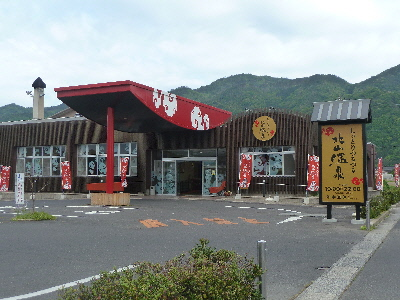
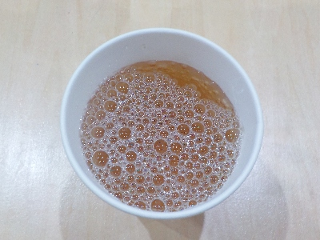
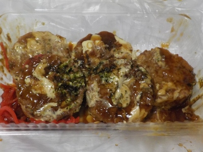

しっとりつるつる北山温泉はぬるぬるです。
更新日 : 2026/06/27

大きい施設なんですが、脱衣場が狭くてちょっとびっくりしました。レストランや休憩室、多目的室とかが場所をとってるんですね。
温泉はぬるぬるとしていて、自宅のお風呂では味わえない感覚がしました。お湯に特徴があると「温泉に来た！」って気分がしていいですね。
人口高濃度炭酸泉露天風呂に入りましたが、お客さんが次々やって来るのでリラックス出来ませんでした。夜で暗いので、炭酸の感じもわかりませんでした。明るい時間帯に行くと小さいアワアワが分かりやすいです。
北山温泉はぬるぬるする内湯が一番気持ちいです。サウナや露店は人気がありますが、私はそれよりも絶対内湯がいいと思っています。お湯の中で肌を触るとヌルヌル滑る感じがとってもいいです。湯船の段差に座って半身浴するのが気持ちいい。
特徴がある温泉はいいですね。
2009/3/31 料金は大人500円でした。60歳以上は300円です。
2017/05/05 リニューアルして派手になりました。
2017/10/21 上がった後に、汗がいっぱい出ました。なんか効能がありそうです。

2024/06/29 帰りに美味しいリンゴ酢のジュースを飲みました。今日は体にいいことしたーって気分です。

2026/06/27 温泉の料金は一般700円になりました。キャベツ焼きを買って帰りました。丸い形を作るためか、小麦感が多かったかな。あと、木次乳業のコーヒーミルクも飲みました。